פשוט להצליח במתמטיקה › כל הנושאים › שאלון 571
5 יחידות – שאלון 571 (35571) – סרטוני הסבר לפי נושא
כל סרטוני ההסבר במתמטיקה לשאלון 571 – 474 סרטונים לפי הנושאים בתוכנית הלימודים: משוואות, בעיות מילוליות ותנועה, סדרות ואינדוקציה, גאומטריה, דמיון משולשים ותאלס, מעגל, טריגונומטריה במישור, זהויות, משוואות ופונקציות טריגו ועוד. מתאים לכיתות י׳–י״א ולהכנה לבגרות.
- משוואות
- בעיות מילוליות ותנועה
- סדרות ואינדוקציה
- גאומטריה
- דמיון משולשים ותאלס
- מעגל
- טריגונומטריה במישור
- זהויות, משוואות ופונקציות טריגו
- הסתברות
- התפלגות נורמלית וסטטיסטיקה
- חדו״א – חקירת פונקציות
- בעיות קיצון
- אינטגרלים
- תרגול ושאלות בגרות מעורבות
📝 בחינות בגרות קודמות עם פתרונות: שאלון 35571 – כל המועדים
משוואות (15) לכל הסרטונים בנושא ←
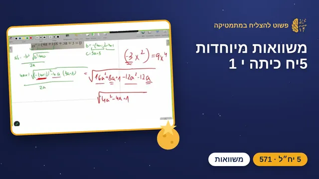
משוואות מיוחדות 5יח כיתה י 1 משוואות מיוחדות 5יח כיתה י 3
משוואות מיוחדות 5יח כיתה י 3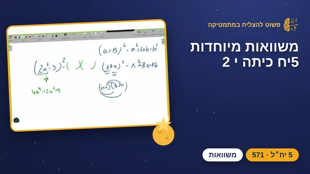
משוואות מיוחדות 5יח כיתה י 2 משוואות מיוחדות כיתה י 5 יח 2
משוואות מיוחדות כיתה י 5 יח 2 משוואות מיוחדות כיתה י 5 יח 1
משוואות מיוחדות כיתה י 5 יח 1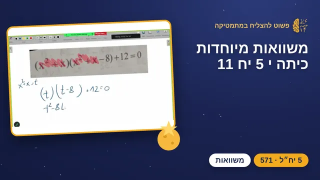
משוואות מיוחדות כיתה י 5 יח 11 משוואות מיוחדות כיתה י 5 יח 10
משוואות מיוחדות כיתה י 5 יח 10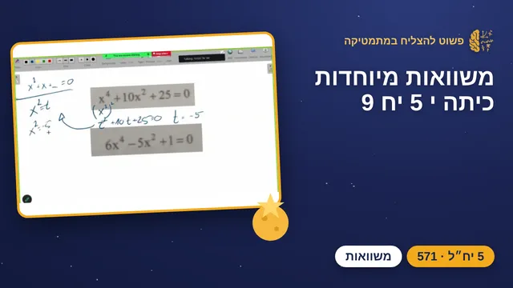
משוואות מיוחדות כיתה י 5 יח 9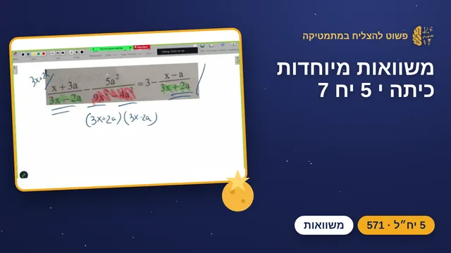
משוואות מיוחדות כיתה י 5 יח 7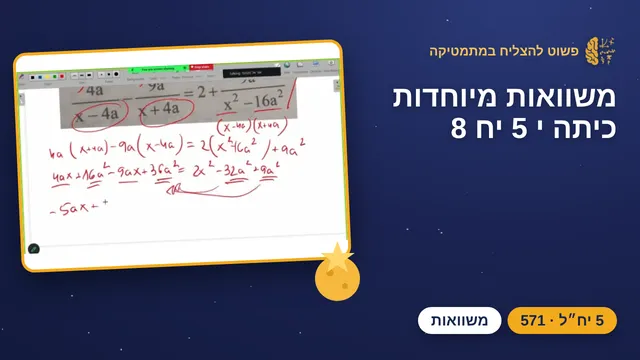
משוואות מיוחדות כיתה י 5 יח 8משוואות מיוחדות כיתה י 5 יח 5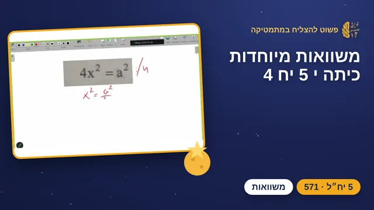
משוואות מיוחדות כיתה י 5 יח 4 משוואות מיוחדות כיתה י 5 יח 6
משוואות מיוחדות כיתה י 5 יח 6 משוואות מיוחדות כיתה י 5 יח 3
משוואות מיוחדות כיתה י 5 יח 3 משוואות מיוחדות – 5 יח׳ כיתה י׳ · סרטון קצר
משוואות מיוחדות – 5 יח׳ כיתה י׳ · סרטון קצרבעיות מילוליות ותנועה (18) לכל הסרטונים בנושא ←
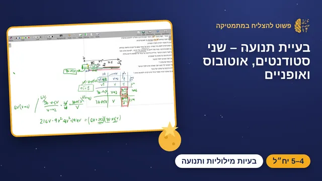
בעיית תנועה – שני סטודנטים, אוטובוס ואופניים תנועה שאלות בגרות 5 יח 581 – מסדר את ההיגיון 2
תנועה שאלות בגרות 5 יח 581 – מסדר את ההיגיון 2 תנועה שאלות בגרות 5 יח 581 – מסדר את ההיגיון 1
תנועה שאלות בגרות 5 יח 581 – מסדר את ההיגיון 1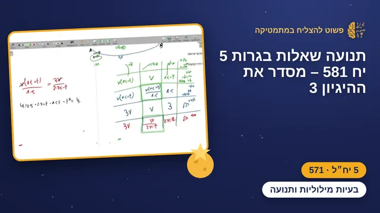
תנועה שאלות בגרות 5 יח 581 – מסדר את ההיגיון 3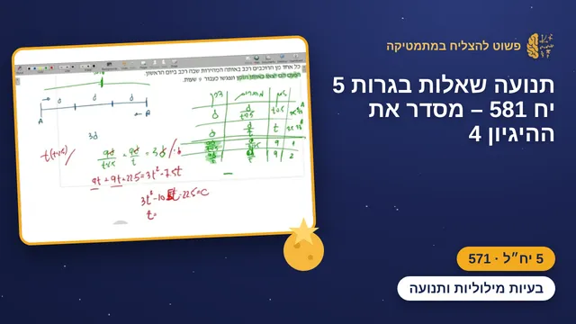
תנועה שאלות בגרות 5 יח 581 – מסדר את ההיגיון 4 בעיות תנועה – שאלה טובה שמסדרת את הראש
בעיות תנועה – שאלה טובה שמסדרת את הראש תרגיל סיפור – להעביר למשוואות עם 2 נעלמים
תרגיל סיפור – להעביר למשוואות עם 2 נעלמים שאלת תנועה 5 יח – איך ניגשים נכון לשאלה
שאלת תנועה 5 יח – איך ניגשים נכון לשאלה תנועה 5 יח 581 – שאלה פתורה
תנועה 5 יח 581 – שאלה פתורה שאלת תנועה – שאלה 1 בגרות חורף 2024 806 581תנועה שאלת בגרות 581
שאלת תנועה – שאלה 1 בגרות חורף 2024 806 581תנועה שאלת בגרות 581 קיץ 2023 מועד ב – שאלת תנועה 806 581 5 יח
קיץ 2023 מועד ב – שאלת תנועה 806 581 5 יח קיץ 2021 מועד ב – שאלת תנועה 806 581 5 יח
קיץ 2021 מועד ב – שאלת תנועה 806 581 5 יח שאלת תנועה 806 581 5 יח – שאלת בגרות
שאלת תנועה 806 581 5 יח – שאלת בגרות קיץ 2019 מועד ב – שאלת תנועה 806 581 5 יחקיץ 2015 מועד ב – שאלת תנועה שאלה 1 581 806
קיץ 2019 מועד ב – שאלת תנועה 806 581 5 יחקיץ 2015 מועד ב – שאלת תנועה שאלה 1 581 806 חורף 2022 נבצרים 581 – בעיות תנועה
חורף 2022 נבצרים 581 – בעיות תנועה חורף 2021 מועד א 581 – בעיות תנועה
חורף 2021 מועד א 581 – בעיות תנועהסדרות ואינדוקציה (30) לכל הסרטונים בנושא ←
 סדרה הנדסית 581
סדרה הנדסית 581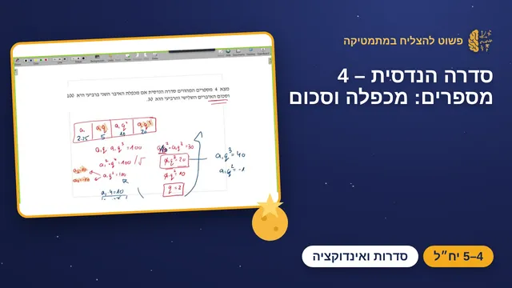
סדרה הנדסית – 4 מספרים: מכפלה וסכום סדרה הנדסית – הפרש בין איברים, מציאת המנה
סדרה הנדסית – הפרש בין איברים, מציאת המנה סדרה חשבונית – a7=−a17, איבר שווה 0 וסכום
סדרה חשבונית – a7=−a17, איבר שווה 0 וסכום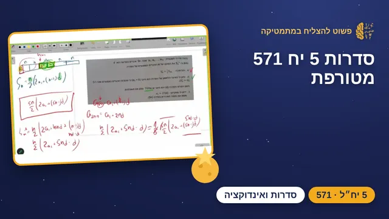
סדרות 5 יח 571 מטורפת תרגילי טופ סדרות 5 יח 571 מטורף ומדהים בו זמנית 2
תרגילי טופ סדרות 5 יח 571 מטורף ומדהים בו זמנית 2 תרגילי טופ סדרות 5 יח 571 מטורף ומדהים בו זמנית 3
תרגילי טופ סדרות 5 יח 571 מטורף ומדהים בו זמנית 3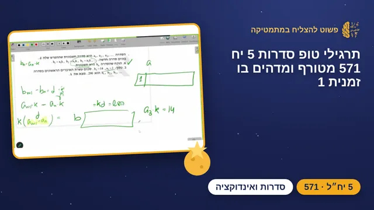
תרגילי טופ סדרות 5 יח 571 מטורף ומדהים בו זמנית 1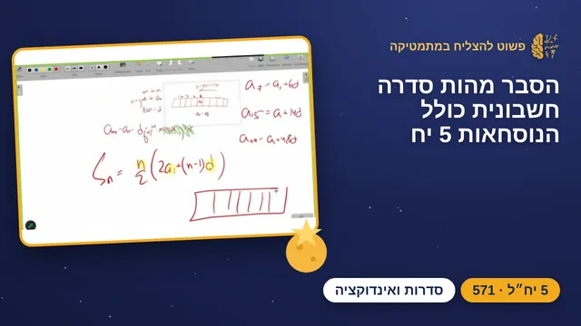
הסבר מהות סדרה חשבונית כולל הנוסחאות 5 יח אינדוקציה 5 יח 571
אינדוקציה 5 יח 571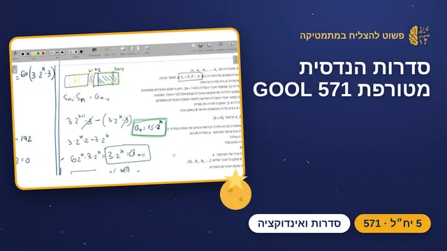
סדרות הנדסית מטורפת 571 GOOL סדרה נדירה של 5 יח תהנו
סדרה נדירה של 5 יח תהנו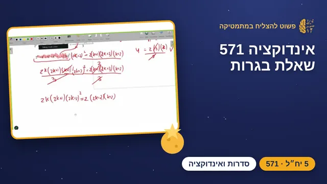
אינדוקציה 571 שאלת בגרות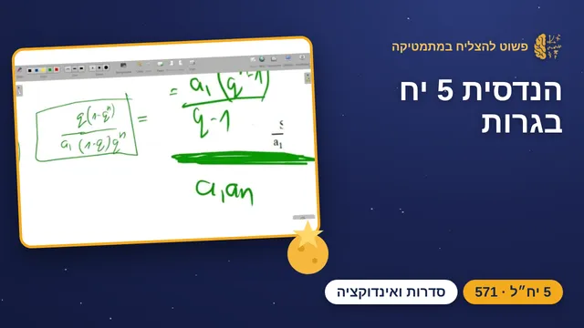
הנדסית 5 יח בגרות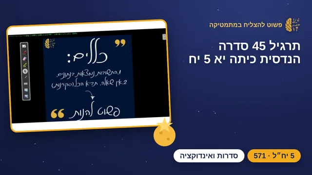
תרגיל 45 סדרה הנדסית כיתה יא 5 יח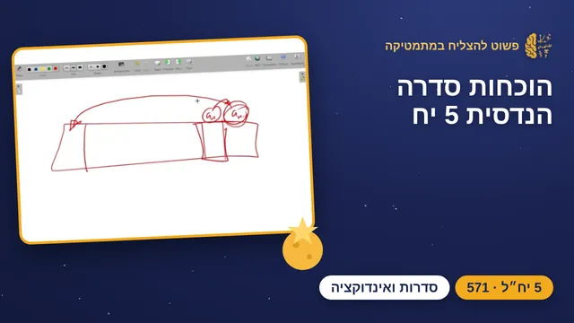
הוכחות סדרה הנדסית 5 יח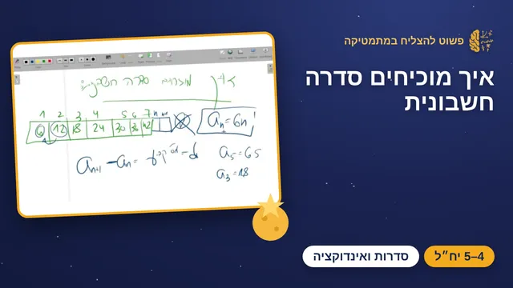
איך מוכיחים סדרה חשבונית סכום סדרה חשבונית 4 5 יחהסבר סדרה חשבונית – מהות ונשמה 4 5 יח
סכום סדרה חשבונית 4 5 יחהסבר סדרה חשבונית – מהות ונשמה 4 5 יח סדרה הנדסית שאלה מקסימה יא 5 יח
סדרה הנדסית שאלה מקסימה יא 5 יח הוכחה סדרה הנדסית הטופ של הטופ 5 יח 2
הוכחה סדרה הנדסית הטופ של הטופ 5 יח 2 הוכחה סדרה הנדסית הטופ של הטופ 5 יח 1
הוכחה סדרה הנדסית הטופ של הטופ 5 יח 1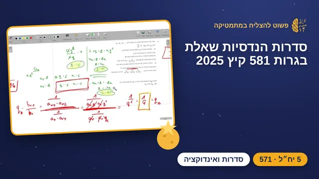
סדרות הנדסיות שאלת בגרות 581 קיץ 2025 שאלות קצרות 5 יח שאלון 571 – סכום סדרה הנדסית מתכנסת עם פונקציית טריגוסדרה חשבונית וסדרה הנדסית – שאלת בגרות ל-4 ו-5 יח
שאלות קצרות 5 יח שאלון 571 – סכום סדרה הנדסית מתכנסת עם פונקציית טריגוסדרה חשבונית וסדרה הנדסית – שאלת בגרות ל-4 ו-5 יח סדרה חשבונית ל-4 ו-5 יח – שאלת בגרות קטלנית
סדרה חשבונית ל-4 ו-5 יח – שאלת בגרות קטלנית סדרות חורף 2024 581 – שאלת בגרות פתורה 5 יח
סדרות חורף 2024 581 – שאלת בגרות פתורה 5 יח סדרות שאלת בגרות 581סדרה הנדסית – תרגיל 39 עמ' 230 (יואל גבע חלק ג) 5 יח
סדרות שאלת בגרות 581סדרה הנדסית – תרגיל 39 עמ' 230 (יואל גבע חלק ג) 5 יח אינדוקציה · סרטון קצר
אינדוקציה · סרטון קצרגאומטריה (40) לכל הסרטונים בנושא ←
 שאלות במקבילית 5 יח כיתה י – חלק 3
שאלות במקבילית 5 יח כיתה י – חלק 3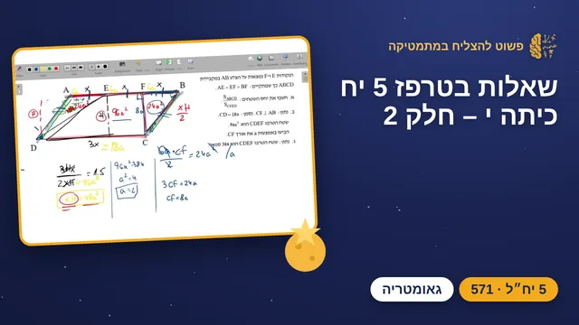
שאלות בטרפז 5 יח כיתה י – חלק 2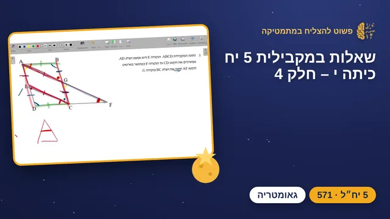
שאלות במקבילית 5 יח כיתה י – חלק 4 שאלות בטרפז 5 יח כיתה י – חלק 1
שאלות בטרפז 5 יח כיתה י – חלק 1 חזרה בגאומטריה – מקבילית, מלבן ומשולשים דומים
חזרה בגאומטריה – מקבילית, מלבן ומשולשים דומים מרובעים כל החוקים כיתה ט י 4 5 יח מטורף הכל ברגע
מרובעים כל החוקים כיתה ט י 4 5 יח מטורף הכל ברגע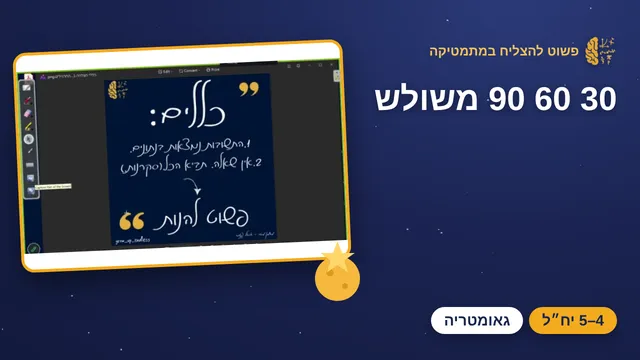
30 60 90 משולש שאלות טרפז ארכימדס 5 יח כיתה י 2
שאלות טרפז ארכימדס 5 יח כיתה י 2 שאלות טרפז ארכימדס 5 יח כיתה י 1
שאלות טרפז ארכימדס 5 יח כיתה י 1 הסבר קטע אמצעים
הסבר קטע אמצעים גאומטריה עם כל משפחת הריבועים הסבר מדהים
גאומטריה עם כל משפחת הריבועים הסבר מדהים שאלת גאומטריה שאלות קצרות יפה וקטנה 571
שאלת גאומטריה שאלות קצרות יפה וקטנה 571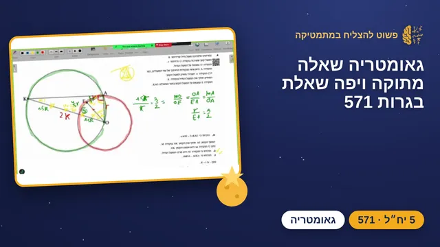
גאומטריה שאלה מתוקה ויפה שאלת בגרות 571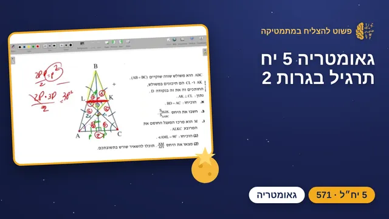
גאומטריה 5 יח תרגיל בגרות 2 הסבר מפגש תיכונים כיתה י 5 יח
הסבר מפגש תיכונים כיתה י 5 יח תרגילי מפגש תיכונים כיתה י 4 5 יח 2
תרגילי מפגש תיכונים כיתה י 4 5 יח 2 תרגילי מפגש תיכונים כיתה י 4 5 יח 1
תרגילי מפגש תיכונים כיתה י 4 5 יח 1 תרגיל בגאומטריה – מפגש תיכונים עם קטע אמצעים כיתה י 5 יחהסבר של כל הרעיונות של מקבילית, מלבן, מעוין וריבוע 5 יח
תרגיל בגאומטריה – מפגש תיכונים עם קטע אמצעים כיתה י 5 יחהסבר של כל הרעיונות של מקבילית, מלבן, מעוין וריבוע 5 יח תרגיל מדהים – ריבוע עם חפיפותתרגיל גאומטריה נדיר ביופיו 5 יח כיתה י
תרגיל מדהים – ריבוע עם חפיפותתרגיל גאומטריה נדיר ביופיו 5 יח כיתה י הסבר איך כותבים טענה-נימוק נכון
הסבר איך כותבים טענה-נימוק נכון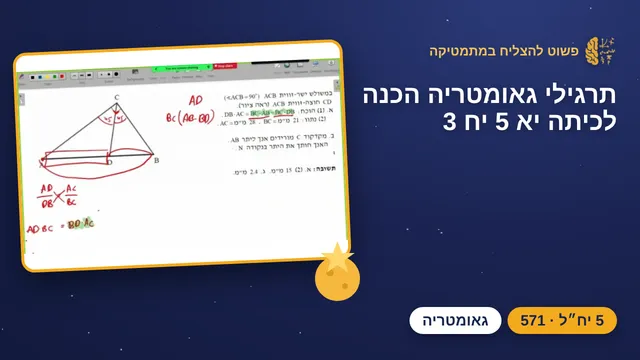
תרגילי גאומטריה הכנה לכיתה יא 5 יח 3 תרגילי גאומטריה הכנה לכיתה יא 5 יח 1
תרגילי גאומטריה הכנה לכיתה יא 5 יח 1 תרגילי גאומטריה הכנה לכיתה יא 5 יח 2גאומטריה שאלת בגרות 581 קיץ 2025
תרגילי גאומטריה הכנה לכיתה יא 5 יח 2גאומטריה שאלת בגרות 581 קיץ 2025 תכונות משולש שווה שוקייםמשולש שווה שוקיים – תכונות
תכונות משולש שווה שוקייםמשולש שווה שוקיים – תכונות גאומטריה 571 שאלת בגרות
גאומטריה 571 שאלת בגרות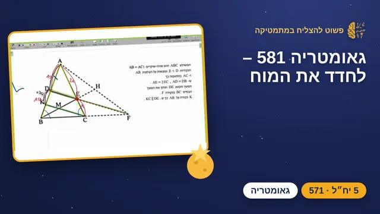
גאומטריה 581 – לחדד את המוח שאלות בגרות 581 גאומטריה – התשובות נמצאות בנתונים 1
שאלות בגרות 581 גאומטריה – התשובות נמצאות בנתונים 1 שאלות בגרות 581 גאומטריה – התשובות נמצאות בנתונים 3שאלות בגרות 581 גאומטריה – התשובות נמצאות בנתונים 2
שאלות בגרות 581 גאומטריה – התשובות נמצאות בנתונים 3שאלות בגרות 581 גאומטריה – התשובות נמצאות בנתונים 2 שאלות גאומטריה ברמה גבוהה מאוד – מרובעים ומעגלגאומטריה 5 יח 581 שאלה 4 – שאלה קשה מאוד
שאלות גאומטריה ברמה גבוהה מאוד – מרובעים ומעגלגאומטריה 5 יח 581 שאלה 4 – שאלה קשה מאוד תכונות בגאומטריה – סיכום משולשים, מרובעים, חפיפה ודמיוןחורף 2022 מועד א – גאומטריה שאלה 4 581
תכונות בגאומטריה – סיכום משולשים, מרובעים, חפיפה ודמיוןחורף 2022 מועד א – גאומטריה שאלה 4 581 2018 מועד ב – גאומטריה שאלה 4 581חורף 2022 נבצרים – גאומטריה שאלה 4 581
2018 מועד ב – גאומטריה שאלה 4 581חורף 2022 נבצרים – גאומטריה שאלה 4 581 2022 מועד א – גאומטריה שאלה 4 581
2022 מועד א – גאומטריה שאלה 4 581דמיון משולשים ותאלס (13) לכל הסרטונים בנושא ←
 דמיון משולשים עם שטחים
דמיון משולשים עם שטחים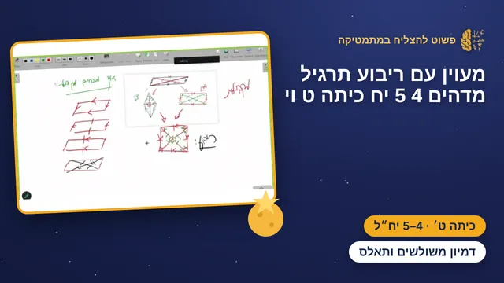
מעוין עם ריבוע תרגיל מדהים 4 5 יח כיתה ט וי חוצה זוויות עם דמיון
חוצה זוויות עם דמיון דמיון עם שטחים
דמיון עם שטחים מפגש תיכונים כולל קטע אמצעים ומשולשים דומים כיתה י 5 יח 1
מפגש תיכונים כולל קטע אמצעים ומשולשים דומים כיתה י 5 יח 1 מפגש תיכונים כולל קטע אמצעים ומשולשים דומים כיתה י 5 יח 2
מפגש תיכונים כולל קטע אמצעים ומשולשים דומים כיתה י 5 יח 2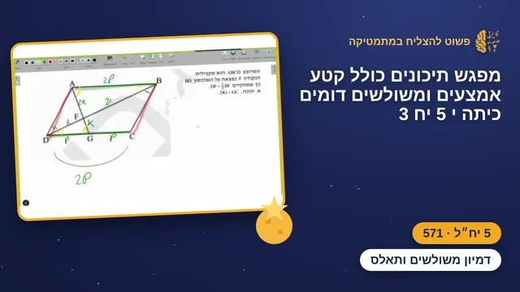
מפגש תיכונים כולל קטע אמצעים ומשולשים דומים כיתה י 5 יח 3 מפגש תיכונים כולל קטע אמצעים ומשולשים דומים כיתה י 5 יח 4
מפגש תיכונים כולל קטע אמצעים ומשולשים דומים כיתה י 5 יח 4 תאלס עם אותיות – רמה גבוהה
תאלס עם אותיות – רמה גבוהה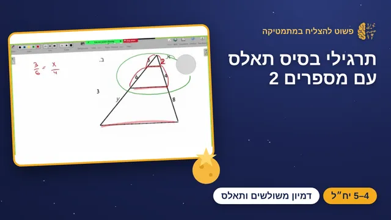
תרגילי בסיס תאלס עם מספרים 2 תרגילי בסיס תאלס עם מספרים 1
תרגילי בסיס תאלס עם מספרים 1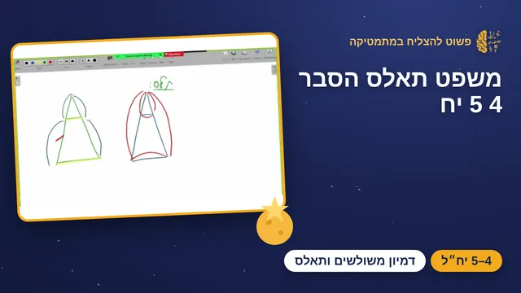
משפט תאלס הסבר 4 5 יח דמיון משולשים – גאומטריה
דמיון משולשים – גאומטריהמעגל (25) לכל הסרטונים בנושא ←
 משולש ישר-זווית חסום במעגל – אנליטית, דמיון ושטחים
משולש ישר-זווית חסום במעגל – אנליטית, דמיון ושטחים מעגל ומשולש במערכת צירים – משיק, קוטר ודמיון
מעגל ומשולש במערכת צירים – משיק, קוטר ודמיון מעגל – משוואת מעגל, משיק ונקודות (שאלת בגרות 2021)
מעגל – משוואת מעגל, משיק ונקודות (שאלת בגרות 2021) גאומטריה במעגל – מרובע חסום, דמיון ויחס שטחים (5 יח)
גאומטריה במעגל – מרובע חסום, דמיון ויחס שטחים (5 יח) גאומטריה במעגל – משיק, קוטר ודמיון משולשים
גאומטריה במעגל – משיק, קוטר ודמיון משולשים מעגל ומשיק – דמיון משולשים ויחס שטחים
מעגל ומשיק – דמיון משולשים ויחס שטחים שאלות גאומטריה במעגל הבסיס של הבסיס 1
שאלות גאומטריה במעגל הבסיס של הבסיס 1 שאלות גאומטריה במעגל הבסיס של הבסיס 2
שאלות גאומטריה במעגל הבסיס של הבסיס 2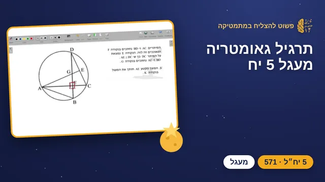
תרגיל גאומטריה מעגל 5 יח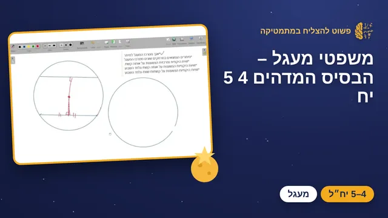
משפטי מעגל – הבסיס המדהים 4 5 יח תרגילי משיק במעגל יא 4 5 יח 2
תרגילי משיק במעגל יא 4 5 יח 2 תרגילי משיק במעגל יא 4 5 יח 3
תרגילי משיק במעגל יא 4 5 יח 3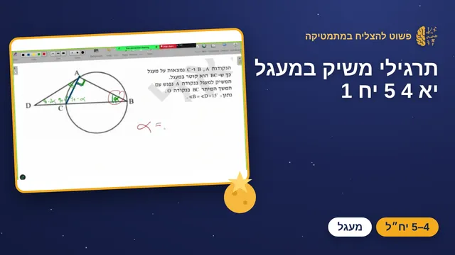
תרגילי משיק במעגל יא 4 5 יח 1 תרגילי משיק במעגל יא 4 5 יח 4
תרגילי משיק במעגל יא 4 5 יח 4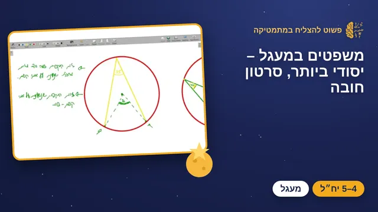
משפטים במעגל – יסודי ביותר, סרטון חובה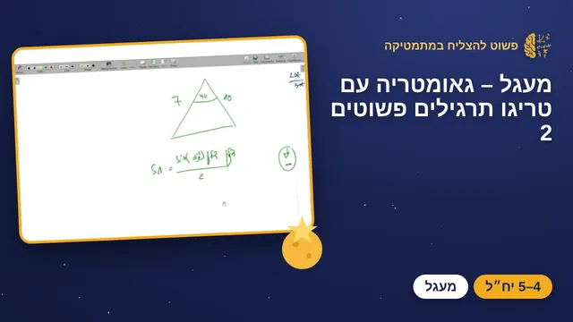
מעגל – גאומטריה עם טריגו תרגילים פשוטים 2 מעגל – גאומטריה עם טריגו תרגילים פשוטים 1
מעגל – גאומטריה עם טריגו תרגילים פשוטים 1 גאומטריה מעגל שאלת בגרות 4 5 יח
גאומטריה מעגל שאלת בגרות 4 5 יח גאומטריה מעגל עם דמיון משולשים – עצות איך להצליח בכל תרגילגאומטריה – הסברים על מעגל ומשיקים, שאלה תותחית
גאומטריה מעגל עם דמיון משולשים – עצות איך להצליח בכל תרגילגאומטריה – הסברים על מעגל ומשיקים, שאלה תותחית תרגיל מעגל גאומטריה 5 יח – תרגיל בגרות פתורתרגיל מעגל גאומטריה 4 5 יח כיתה יגאומטריה – תרגילים פתורים במעגל 481 581 2משפטי מעגל – הסברים 481 581
תרגיל מעגל גאומטריה 5 יח – תרגיל בגרות פתורתרגיל מעגל גאומטריה 4 5 יח כיתה יגאומטריה – תרגילים פתורים במעגל 481 581 2משפטי מעגל – הסברים 481 581 גאומטריה – תרגילים פתורים במעגל 481 581 1
גאומטריה – תרגילים פתורים במעגל 481 581 1טריגונומטריה במישור (43) לכל הסרטונים בנושא ←
 הסבר טריגו כל הנוסחאות חשוב ביותר 5 יח (עותק)
הסבר טריגו כל הנוסחאות חשוב ביותר 5 יח (עותק) הסבר משולש ישר זווית ומשפט הסינוסים
הסבר משולש ישר זווית ומשפט הסינוסים תרגילים מדהימים של ישר זווית ומשפט הסינוסים 2
תרגילים מדהימים של ישר זווית ומשפט הסינוסים 2 תרגילים מדהימים של ישר זווית ומשפט הסינוסים 1
תרגילים מדהימים של ישר זווית ומשפט הסינוסים 1 תרגילים מדהימים של ישר זווית ומשפט הסינוסים 5
תרגילים מדהימים של ישר זווית ומשפט הסינוסים 5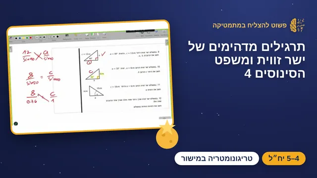
תרגילים מדהימים של ישר זווית ומשפט הסינוסים 4 תרגילים מדהימים של ישר זווית ומשפט הסינוסים 3
תרגילים מדהימים של ישר זווית ומשפט הסינוסים 3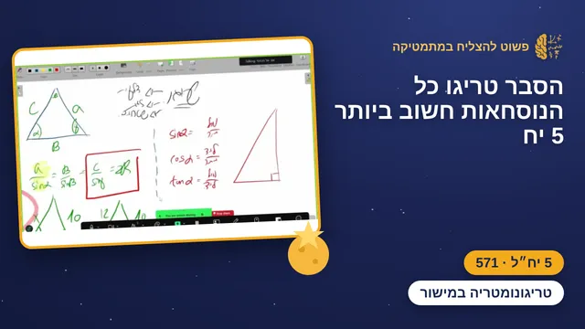
הסבר טריגו כל הנוסחאות חשוב ביותר 5 יח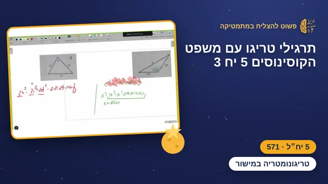
תרגילי טריגו עם משפט הקוסינוסים 5 יח 3 תרגילי טריגו עם משפט הקוסינוסים 5 יח 2
תרגילי טריגו עם משפט הקוסינוסים 5 יח 2 תרגילי טריגו עם משפט הקוסינוסים 5 יח 1
תרגילי טריגו עם משפט הקוסינוסים 5 יח 1 משפט הקוסינוסים עם נעלמים
משפט הקוסינוסים עם נעלמים תרגיל טריגו עם מעגל חוסם וחסום 5 יח כיתה יא
תרגיל טריגו עם מעגל חוסם וחסום 5 יח כיתה יא טריגו שאלת בגרות 581 קיץ 2025
טריגו שאלת בגרות 581 קיץ 2025 משולש ישר זווית – תרגילי טריגו בסיסיים sin cos tan כיתה י 1
משולש ישר זווית – תרגילי טריגו בסיסיים sin cos tan כיתה י 1 משולש ישר זווית – תרגילי טריגו בסיסיים sin cos tan כיתה י 4
משולש ישר זווית – תרגילי טריגו בסיסיים sin cos tan כיתה י 4 משולש ישר זווית – תרגילי טריגו בסיסיים sin cos tan כיתה י 3
משולש ישר זווית – תרגילי טריגו בסיסיים sin cos tan כיתה י 3 משולש ישר זווית – תרגילי טריגו בסיסיים sin cos tan כיתה י 2
משולש ישר זווית – תרגילי טריגו בסיסיים sin cos tan כיתה י 2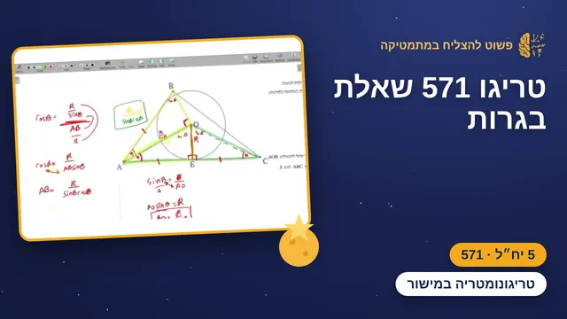
טריגו 571 שאלת בגרות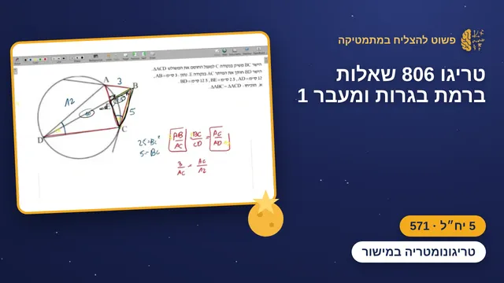
טריגו 806 שאלות ברמת בגרות ומעבר 1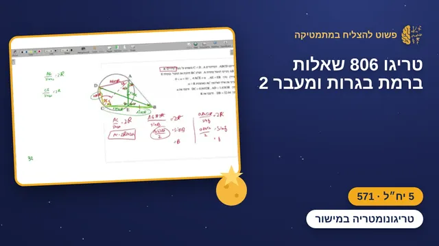
טריגו 806 שאלות ברמת בגרות ומעבר 2 טריגונומטריה 581 806 5 יח 3
טריגונומטריה 581 806 5 יח 3 טריגונומטריה 581 806 5 יח 1
טריגונומטריה 581 806 5 יח 1 טריגונומטריה 581 806 5 יח 2
טריגונומטריה 581 806 5 יח 2 טריגו 806 582 שאלות בגרות 2
טריגו 806 582 שאלות בגרות 2 טריגו 806 582 שאלות בגרות 1
טריגו 806 582 שאלות בגרות 1 שאלות בגרות 806 טריגונומטריה שאלה 5 2
שאלות בגרות 806 טריגונומטריה שאלה 5 2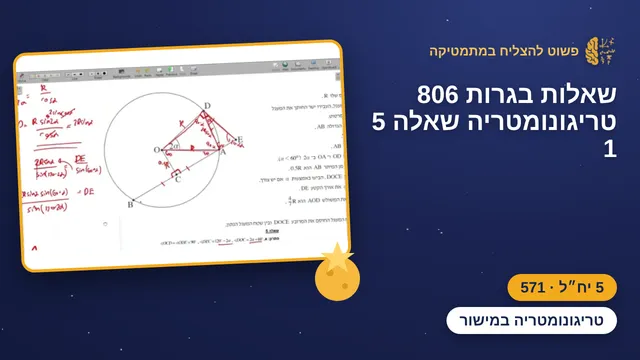
שאלות בגרות 806 טריגונומטריה שאלה 5 1 הסבר טריגונומטריה 806 כולל זהויות, משפט הסינוסים והקוסינוסים
הסבר טריגונומטריה 806 כולל זהויות, משפט הסינוסים והקוסינוסים הסבר משפט הסינוסים והקוסינוסיםטריגונומטריה – מציאת זווית ואורך צלעות, הבסיס ועצותטריגונומטריה – איך למצוא זווית ואורך צלעות עם sin cos tan
הסבר משפט הסינוסים והקוסינוסיםטריגונומטריה – מציאת זווית ואורך צלעות, הבסיס ועצותטריגונומטריה – איך למצוא זווית ואורך צלעות עם sin cos tan טריגונומטריה – איך משתמשים בסינוס, קוסינוס וטנגנס, שאלה פתורה
טריגונומטריה – איך משתמשים בסינוס, קוסינוס וטנגנס, שאלה פתורה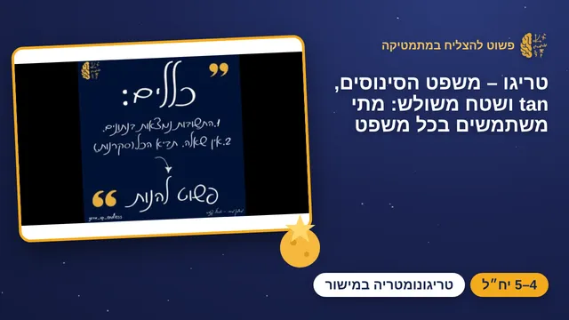
טריגו – משפט הסינוסים, tan ושטח משולש: מתי משתמשים בכל משפטשאלת טריגו 5 יח שאלת בגרות 581 – שאלה מדהימה טריגו עם הבעות של כמה נעלמים – רמה גבוהה כיתה י 5 יחסיכום משפטי טריגונומטריה – סינוסים, קוסינוסים ושטח משולש
טריגו עם הבעות של כמה נעלמים – רמה גבוהה כיתה י 5 יחסיכום משפטי טריגונומטריה – סינוסים, קוסינוסים ושטח משולש טריגו עם גאומטריה – משפט הסינוסים והקוסינוסיםמשפט הסינוסים – טריגונומטריהטריגונומטריה – משפט הסינוסים כיתה י
טריגו עם גאומטריה – משפט הסינוסים והקוסינוסיםמשפט הסינוסים – טריגונומטריהטריגונומטריה – משפט הסינוסים כיתה י שאלת טריגונומטריה 806 חורף 2024 – שאלת בגרות מלאה פתורה 581
שאלת טריגונומטריה 806 חורף 2024 – שאלת בגרות מלאה פתורה 581 חורף 2010 מועד ב שאלה 5 – טריגונומטריה 581 806
חורף 2010 מועד ב שאלה 5 – טריגונומטריה 581 806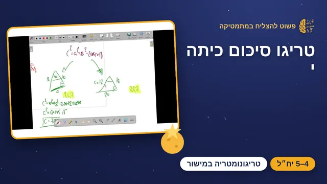
טריגו סיכום כיתה יזהויות, משוואות ופונקציות טריגו (43) לכל הסרטונים בנושא ←
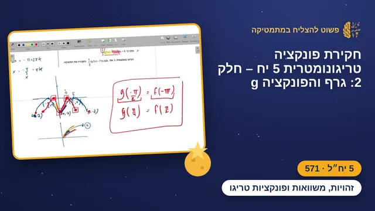
חקירת פונקציה טריגונומטרית 5 יח – חלק 2: גרף והפונקציה g חקירת פונקציה טריגונומטרית 5 יח – חלק 1: פתרון המשוואה ונקודות
חקירת פונקציה טריגונומטרית 5 יח – חלק 1: פתרון המשוואה ונקודות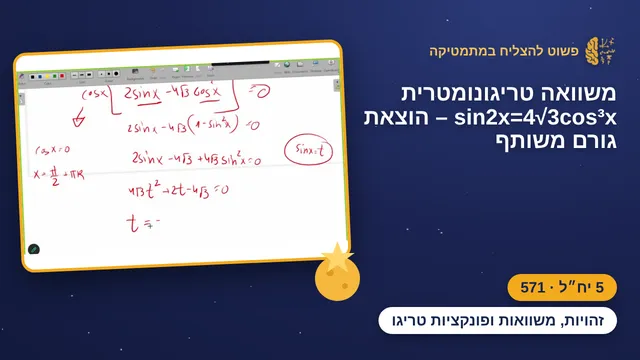
משוואה טריגונומטרית sin2x=4√3cos³x – הוצאת גורם משותף פיתרון משוואות עם זהויות 5 יח 1
פיתרון משוואות עם זהויות 5 יח 1 פיתרון משוואות עם זהויות 5 יח 3
פיתרון משוואות עם זהויות 5 יח 3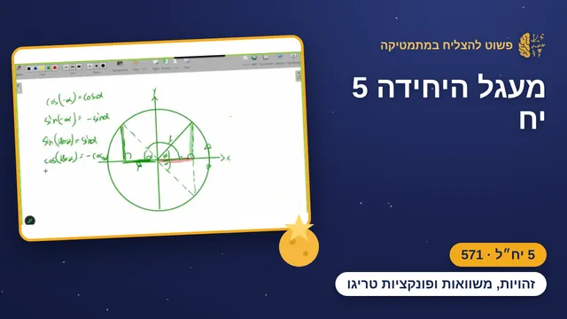
מעגל היחידה 5 יח פיתרון משוואות עם זהויות 5 יח 2
פיתרון משוואות עם זהויות 5 יח 2 חקירת טריגו
חקירת טריגו זהויות כפולות – למה, כמה ואיך 5 יח כיתה יא
זהויות כפולות – למה, כמה ואיך 5 יח כיתה יא חקירת טריגו שאלת בגרות מתוקה מאוד 5 יח כיתה יא
חקירת טריגו שאלת בגרות מתוקה מאוד 5 יח כיתה יא להוכיח זהות פשוטה טריגו כיתה יא 5 יחהוכחות זהויות – חובת צפייה 5 יח כיתה יא 2
להוכיח זהות פשוטה טריגו כיתה יא 5 יחהוכחות זהויות – חובת צפייה 5 יח כיתה יא 2 הוכחות זהויות – חובת צפייה 5 יח כיתה יא 3
הוכחות זהויות – חובת צפייה 5 יח כיתה יא 3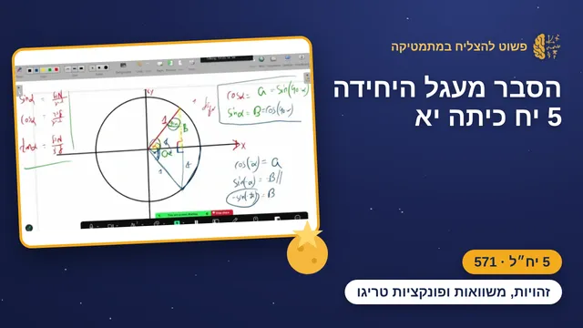
הסבר מעגל היחידה 5 יח כיתה יא הוכחות זהויות – חובת צפייה 5 יח כיתה יא 1שאלות קצרות 5 יח שאלון 571 – חקירת טריגו
הוכחות זהויות – חובת צפייה 5 יח כיתה יא 1שאלות קצרות 5 יח שאלון 571 – חקירת טריגו שאלות קצרות 571 – חקירת טריגו 5 יח
שאלות קצרות 571 – חקירת טריגו 5 יח טריגו עם פרמטרים 5 יח כיתה י
טריגו עם פרמטרים 5 יח כיתה י משחק והוכחה של זהויות 5 יח 581 1משחק והוכחה של זהויות 5 יח 581 5
משחק והוכחה של זהויות 5 יח 581 1משחק והוכחה של זהויות 5 יח 581 5 משחק והוכחה של זהויות 5 יח 581 4
משחק והוכחה של זהויות 5 יח 581 4 משחק והוכחה של זהויות 5 יח 581 3
משחק והוכחה של זהויות 5 יח 581 3 משחק והוכחה של זהויות 5 יח 581 2
משחק והוכחה של זהויות 5 יח 581 2 הסבר מעגל היחידה 5 יח נדיר ביופיונגזרות פונקציות טריגונומטריות 806
הסבר מעגל היחידה 5 יח נדיר ביופיונגזרות פונקציות טריגונומטריות 806 דוגמאות של נגזרות פונקציות טריגונומטריות
דוגמאות של נגזרות פונקציות טריגונומטריות פונקציה זוגית או אי-זוגית – פונקציה טריגונומטרית 806
פונקציה זוגית או אי-זוגית – פונקציה טריגונומטרית 806 נגזרת – הסבר פונקציות טריגונומטריותמשוואות טריגונומטריות 5 יח 806 5
נגזרת – הסבר פונקציות טריגונומטריותמשוואות טריגונומטריות 5 יח 806 5 משוואות טריגונומטריות 5 יח 806 3משוואות טריגונומטריות 5 יח 806 2משוואות טריגונומטריות 5 יח 806 1מעגל היחידה – הסבר זהויות 5 יח משוואות טריגונומטריותמשוואות טריגונומטריות ברמה גבוהה 5 יח כיתה י 2
משוואות טריגונומטריות 5 יח 806 3משוואות טריגונומטריות 5 יח 806 2משוואות טריגונומטריות 5 יח 806 1מעגל היחידה – הסבר זהויות 5 יח משוואות טריגונומטריותמשוואות טריגונומטריות ברמה גבוהה 5 יח כיתה י 2 משוואות טריגונומטריות ברמה גבוהה 5 יח כיתה י 3
משוואות טריגונומטריות ברמה גבוהה 5 יח כיתה י 3 משוואות טריגונומטריות ברמה גבוהה 5 יח כיתה י 4
משוואות טריגונומטריות ברמה גבוהה 5 יח כיתה י 4 זהויות ומשוואות טריגונומטריות – משמעות ומהות, זהויות בסיסיות
זהויות ומשוואות טריגונומטריות – משמעות ומהות, זהויות בסיסיות משוואות טריגונומטריות – tan: מה זה אומר ואיך פותרים כיתה י 5 יחמשוואות טריגונומטריות – cos: מה זה אומר ואיך פותרים כיתה י 5 יח 1
משוואות טריגונומטריות – tan: מה זה אומר ואיך פותרים כיתה י 5 יחמשוואות טריגונומטריות – cos: מה זה אומר ואיך פותרים כיתה י 5 יח 1 משוואות טריגונומטריות – cos: מה זה אומר ואיך פותרים כיתה י 5 יח 2
משוואות טריגונומטריות – cos: מה זה אומר ואיך פותרים כיתה י 5 יח 2 משוואות טריגונומטריות – sin: מה זה אומר ואיך פותרים כיתה י 5 יח 2משוואות טריגונומטריות – sin: מה זה אומר ואיך פותרים כיתה י 5 יח 1חקירת טריגו שאלה 7 בגרות חורף 2024 806 581
משוואות טריגונומטריות – sin: מה זה אומר ואיך פותרים כיתה י 5 יח 2משוואות טריגונומטריות – sin: מה זה אומר ואיך פותרים כיתה י 5 יח 1חקירת טריגו שאלה 7 בגרות חורף 2024 806 581הסתברות (29) לכל הסרטונים בנושא ←
 הסתברות – כפתורים בקופסה, דנה ורותי (עץ ומותנה)
הסתברות – כפתורים בקופסה, דנה ורותי (עץ ומותנה) הסתברות בטבלה עם מותנה – כנס שוטרים, שופטים ועורכי דין
הסתברות בטבלה עם מותנה – כנס שוטרים, שופטים ועורכי דין הסתברות מותנית בטבלה – סקר הפסקת צהריים (שנה א׳ ושנה ב׳)
הסתברות מותנית בטבלה – סקר הפסקת צהריים (שנה א׳ ושנה ב׳) הסתברות עץ – פירות משתי מגירות והסתברות מותניתהסתברות ברנולי 5 יח שאלון 571
הסתברות עץ – פירות משתי מגירות והסתברות מותניתהסתברות ברנולי 5 יח שאלון 571 הסתברות בטבלה עם מותנה 4-5 יח – תרגיל
הסתברות בטבלה עם מותנה 4-5 יח – תרגיל הסתברות עץ 4-5 יח בסיסי – חלק 2
הסתברות עץ 4-5 יח בסיסי – חלק 2 הסתברות מותנית בטבלה 4-5 יח – מבחניםהסתברות בטבלה דו-ממדית – רישיון נהיגה בשכבה
הסתברות מותנית בטבלה 4-5 יח – מבחניםהסתברות בטבלה דו-ממדית – רישיון נהיגה בשכבה הסתברות בטבלה – מנוי לנטפליקס בשכבה
הסתברות בטבלה – מנוי לנטפליקס בשכבה הסתברות בטבלה – מתנדבים בשכבות י״א-י״ב
הסתברות בטבלה – מתנדבים בשכבות י״א-י״ב הסתברות בטבלה – דירה ומכונית, מבחנים באוניברסיטה
הסתברות בטבלה – דירה ומכונית, מבחנים באוניברסיטה הסתברות 571 בגרות 5 יח 2
הסתברות 571 בגרות 5 יח 2 הסתברות 806 שאלות פגז שאלון 581 2הסתברות – מהות, משמעות והסברהסתברות מותנית – תרגילים לדוגמה עץ 2
הסתברות 806 שאלות פגז שאלון 581 2הסתברות – מהות, משמעות והסברהסתברות מותנית – תרגילים לדוגמה עץ 2 הסתברות מותנית – תרגילים לדוגמה עץ 3
הסתברות מותנית – תרגילים לדוגמה עץ 3 הסתברות מותנית – תרגילים לדוגמה עץ 1הסתברות מותנית דיאגרמת עץ – הסבר ודוגמההסתברות שאלה פצצה 5 יח 581הסתברות שאלה 4 שאלת בגרות 5 יח 581
הסתברות מותנית – תרגילים לדוגמה עץ 1הסתברות מותנית דיאגרמת עץ – הסבר ודוגמההסתברות שאלה פצצה 5 יח 581הסתברות שאלה 4 שאלת בגרות 5 יח 581 הסתברות עץ וטבלה – שאלות בגרות וחזרה על כל החומרהסתברות טבלה – פתרון שאלות והסברים חלק א
הסתברות עץ וטבלה – שאלות בגרות וחזרה על כל החומרהסתברות טבלה – פתרון שאלות והסברים חלק א הסתברות טבלה – פתרון שאלות והסברים חלק ב כולל מותנה
הסתברות טבלה – פתרון שאלות והסברים חלק ב כולל מותנה הסתברות טבלה – פתרון שאלות והסברים חלק ג כולל מותנה עם נעלמים
הסתברות טבלה – פתרון שאלות והסברים חלק ג כולל מותנה עם נעלמים קיץ 2022 מועד א – הסתברות שאלה 3 581 806קיץ 2021 מועד א – הסתברות שאלה 3 581 806קיץ 2022 מועד ב – הסתברות טבלה שאלה 3הסתברות עץ וטבלה כולל מותנה ושאלות בגרות – הסבר כל החומר
קיץ 2022 מועד א – הסתברות שאלה 3 581 806קיץ 2021 מועד א – הסתברות שאלה 3 581 806קיץ 2022 מועד ב – הסתברות טבלה שאלה 3הסתברות עץ וטבלה כולל מותנה ושאלות בגרות – הסבר כל החומרהתפלגות נורמלית וסטטיסטיקה (6) לכל הסרטונים בנושא ←
 התפלגות נורמלית – אורך גבעולי פרחים, אחוזים ופרמטריםהתפלגות נורמלית – הסבר של כל החומר בשתי דקות וחצי
התפלגות נורמלית – אורך גבעולי פרחים, אחוזים ופרמטריםהתפלגות נורמלית – הסבר של כל החומר בשתי דקות וחצי התפלגות נורמלית 3
התפלגות נורמלית 3 התפלגות נורמלית
התפלגות נורמלית התפלגות נורמלית 2
התפלגות נורמלית 2 התפלגות נורמלית 4
התפלגות נורמלית 4חדו״א – חקירת פונקציות (132) לכל הסרטונים בנושא ←
 גרפי f′ ו-f″ – זיהוי, משיק, אינטגרל ופונקציה חדשה
גרפי f′ ו-f″ – זיהוי, משיק, אינטגרל ופונקציה חדשה חקירת f(x)=2−2∕x² – משיק, אסימפטוטה ובעיית קיצוןחקירת f(x)=1+½x−√(2x+9) – פרמטר, תחום וקיצוןחקירת פונקציה רציונלית y=(ax+16)∕(x²−3x−4) – מציאת פרמטרים
חקירת f(x)=2−2∕x² – משיק, אסימפטוטה ובעיית קיצוןחקירת f(x)=1+½x−√(2x+9) – פרמטר, תחום וקיצוןחקירת פונקציה רציונלית y=(ax+16)∕(x²−3x−4) – מציאת פרמטרים חקירת פונקציה רציונלית עם פרמטר 5 יח – הכנה לכיתה יא – חלק 2: נגזרת וקיצון
חקירת פונקציה רציונלית עם פרמטר 5 יח – הכנה לכיתה יא – חלק 2: נגזרת וקיצון חקירת פונקציה רציונלית עם פרמטר 5 יח – הכנה לכיתה יא – חלק 1: תחום ואסימפטוטות
חקירת פונקציה רציונלית עם פרמטר 5 יח – הכנה לכיתה יא – חלק 1: תחום ואסימפטוטות חקירת פונקציה רציונלית עם פרמטר 5 יח – הכנה לכיתה יא – חלק 3: טבלה ושרטוט
חקירת פונקציה רציונלית עם פרמטר 5 יח – הכנה לכיתה יא – חלק 3: טבלה ושרטוט f(x)=2x³−9x²+12x−a – פרמטר, משיק ושטח
f(x)=2x³−9x²+12x−a – פרמטר, משיק ושטח חקירת פולינום f(x)=x³−3x+2 ושטחים
חקירת פולינום f(x)=x³−3x+2 ושטחים פולינום – האיבר המוביל והתנהגות באינסוף, זיהוי גרף
פולינום – האיבר המוביל והתנהגות באינסוף, זיהוי גרף חקירת f(x)=a∕(x²−4) – מציאת פרמטר משיפוע המשיק
חקירת f(x)=a∕(x²−4) – מציאת פרמטר משיפוע המשיק חקירת f(x)=6x(√x−m) – המשך: גרף ושטח
חקירת f(x)=6x(√x−m) – המשך: גרף ושטח חקירת f(x)=1+½x−√(2x+b) – מציאת b ותחום הגדרה
חקירת f(x)=1+½x−√(2x+b) – מציאת b ותחום הגדרה חקירת f(x)=√(5−2x)+bx ופונקציה קדומה
חקירת f(x)=√(5−2x)+bx ופונקציה קדומה חקירת f(x)=±x²√(5+x) – זיהוי גרף ופונקציית נגזרת
חקירת f(x)=±x²√(5+x) – זיהוי גרף ופונקציית נגזרת הקשר בין גרף הפונקציה לגרף הנגזרת
הקשר בין גרף הפונקציה לגרף הנגזרת חקירת f(x)=(x²−4x+5)∕(x−2) והפונקציה g(x)=│f(x)│
חקירת f(x)=(x²−4x+5)∕(x−2) והפונקציה g(x)=│f(x)│ חקירת f(x)=(2x²−2)∕(x²−4)+1 – אסימפטוטות וזיהוי גרפיםהקשר בין f, f′ ו-f″ – זיהוי גרפים
חקירת f(x)=(2x²−2)∕(x²−4)+1 – אסימפטוטות וזיהוי גרפיםהקשר בין f, f′ ו-f″ – זיהוי גרפים חקירת פונקציה מורכבת fx=x²−kx³ עם פרמטר
חקירת פונקציה מורכבת fx=x²−kx³ עם פרמטר פונקציה זוגית ואי זוגית – הבנה וזיהוי
פונקציה זוגית ואי זוגית – הבנה וזיהוי חקירת פולינום fx=3x⁴−2x³ – קיצון ותחומי עלייה וירידה
חקירת פולינום fx=3x⁴−2x³ – קיצון ותחומי עלייה וירידה חקירת פונקציה רציונלית עם פרמטר y=x−1∕x²−b²
חקירת פונקציה רציונלית עם פרמטר y=x−1∕x²−b² חקירת פולינום fx=3x⁴−2x³ – פתיחההסבר קשר בין כל הפונק קשר בין נגזרת ראשונה לשניה הסבר מטורף 5 יחתרגילי קעירות וקשר בין פונק 571 5 יח מתמטיקה הגאונים 2תרגילי קעירות וקשר בין פונק 571 5 יח מתמטיקה הגאונים 1תרגילי קעירות וקשר בין פונק 571 5 יח מתמטיקה הגאונים 3
חקירת פולינום fx=3x⁴−2x³ – פתיחההסבר קשר בין כל הפונק קשר בין נגזרת ראשונה לשניה הסבר מטורף 5 יחתרגילי קעירות וקשר בין פונק 571 5 יח מתמטיקה הגאונים 2תרגילי קעירות וקשר בין פונק 571 5 יח מתמטיקה הגאונים 1תרגילי קעירות וקשר בין פונק 571 5 יח מתמטיקה הגאונים 3 הזזות פונק אופקית ואנכית - 4-5 יחהזזות פונק אופקית ואנכית - 4-5 יח
הזזות פונק אופקית ואנכית - 4-5 יחהזזות פונק אופקית ואנכית - 4-5 יח הזזות פונק אופקית ואנכית - 4-5 יח
הזזות פונק אופקית ואנכית - 4-5 יח הזזות פונק אופקית ואנכית - 4-5 יח
הזזות פונק אופקית ואנכית - 4-5 יח הזזות פונק אופקית ואנכית - 4-5 יח
הזזות פונק אופקית ואנכית - 4-5 יח הזזות פונק אופקית ואנכית - 4-5 יחהזזות פונק אופקית ואנכית - 4-5 יחהזזות פונק אופקית ואנכית - 4-5 יח
הזזות פונק אופקית ואנכית - 4-5 יחהזזות פונק אופקית ואנכית - 4-5 יחהזזות פונק אופקית ואנכית - 4-5 יח פונק כללית שאלה מתוקה וחמודה
פונק כללית שאלה מתוקה וחמודה הסבר על כל סוגי הפונקציות שנלמד בכל התיכון
הסבר על כל סוגי הפונקציות שנלמד בכל התיכון משמעות של פונקציה ונגזרת – מותאם לכל היחידותהסבר משמעות פונקציית שורש – איך גוזרים, תחום הגדרה ופתירת משוואותקשר בין פונקציה לנגזרת לנגזרת שנייה 5 יח 4
משמעות של פונקציה ונגזרת – מותאם לכל היחידותהסבר משמעות פונקציית שורש – איך גוזרים, תחום הגדרה ופתירת משוואותקשר בין פונקציה לנגזרת לנגזרת שנייה 5 יח 4 התרגיל הכי מטורף – קשר בין שלוש הפונקציות 5 יח
התרגיל הכי מטורף – קשר בין שלוש הפונקציות 5 יח קשר בין פונקציה לנגזרת לנגזרת שנייה 5 יח 1
קשר בין פונקציה לנגזרת לנגזרת שנייה 5 יח 1 קשר בין פונקציה לנגזרת לנגזרת שנייה 5 יח 2קשר בין פונקציה לנגזרת לנגזרת שנייה 5 יח 3
קשר בין פונקציה לנגזרת לנגזרת שנייה 5 יח 2קשר בין פונקציה לנגזרת לנגזרת שנייה 5 יח 3 פונקציית פולינום כיתה י 5 יח – התחלה של ההתחלה כולל קו ישרהסבר פונקציה זוגית ואי-זוגית
פונקציית פולינום כיתה י 5 יח – התחלה של ההתחלה כולל קו ישרהסבר פונקציה זוגית ואי-זוגית פונקציית פולינום כיתה י 5 יח – התחלה של ההתחלה
פונקציית פולינום כיתה י 5 יח – התחלה של ההתחלה משמעות של פונקציה ונגזרתפונקציית שורש חקירה מלאה עם סעיפים חכמים
משמעות של פונקציה ונגזרתפונקציית שורש חקירה מלאה עם סעיפים חכמים למצוא אסימפטוטה אופקית בפונקציית שבר
למצוא אסימפטוטה אופקית בפונקציית שבר עבודת קיץ הכנה לכיתה יא 5 יח – שאלת שבר עם פרמטרחקירת פונקציית שבר 571 שאלות בגרות 5 יח
עבודת קיץ הכנה לכיתה יא 5 יח – שאלת שבר עם פרמטרחקירת פונקציית שבר 571 שאלות בגרות 5 יח שאלות קצרות 571 5 יח – פונקציה זוגית ואי-זוגית
שאלות קצרות 571 5 יח – פונקציה זוגית ואי-זוגית שאלות קצרות 571 – תחום הגדרה שבר ושורש 5 יח 2
שאלות קצרות 571 – תחום הגדרה שבר ושורש 5 יח 2 שאלות קצרות 571 – תחום הגדרה שבר ושורש 5 יח
שאלות קצרות 571 – תחום הגדרה שבר ושורש 5 יח שאלות קצרות 571 5 יח – תחום הגדרה עם חור בפונקציית שברפונקציה מורכבת – תרגיל התחלה
שאלות קצרות 571 5 יח – תחום הגדרה עם חור בפונקציית שברפונקציה מורכבת – תרגיל התחלה 571 שאלה 1 שאלות קצרות – פונקציה עם שבר ושורש
571 שאלה 1 שאלות קצרות – פונקציה עם שבר ושורש פונקציית שבר 5 יח 581 שאלה טילית
פונקציית שבר 5 יח 581 שאלה טילית פונקציית שורש – תחום הגדרה, איך גוזרים ואיך פותרים משוואהתרגיל דיפרנציאלי טיל בליסטי 5 יח כיתה י
פונקציית שורש – תחום הגדרה, איך גוזרים ואיך פותרים משוואהתרגיל דיפרנציאלי טיל בליסטי 5 יח כיתה י הסבר משמעות פונקציה ונגזרת – הבסיס של הבסיס שאלון 471
הסבר משמעות פונקציה ונגזרת – הבסיס של הבסיס שאלון 471 אסימפטוטה אופקית – הסבר נדיר ביותר 471
אסימפטוטה אופקית – הסבר נדיר ביותר 471 סעיף חכם 1 – לחלק לפונקציה: מה קורה לפונקציה 4 5 יח
סעיף חכם 1 – לחלק לפונקציה: מה קורה לפונקציה 4 5 יח קשר בין פונקציה לנגזרת עם פונקציית שבר – הבנה עמוקה 4 5 יח
קשר בין פונקציה לנגזרת עם פונקציית שבר – הבנה עמוקה 4 5 יח פונקציית שבר רציונלית – חקירה מלאה עם מציאת נעלם
פונקציית שבר רציונלית – חקירה מלאה עם מציאת נעלם חקירה מלאה של פונקציה רציונלית (מנה) שאלון 471 571 – מהבסיס עד הסוף
חקירה מלאה של פונקציה רציונלית (מנה) שאלון 471 571 – מהבסיס עד הסוף סעיפי חשיבה בפונקציה והזזות
סעיפי חשיבה בפונקציה והזזות חקירת פונקציית פולינום – חקירה מלאה כולל סעיפים מיוחדים
חקירת פונקציית פולינום – חקירה מלאה כולל סעיפים מיוחדים איך פותרים משוואות פולינום ומורכבת – הכי פשוט בעולם
איך פותרים משוואות פולינום ומורכבת – הכי פשוט בעולם פונקציה – מה אנחנו הולכים לעשות איתה ומה אנחנו רוצים ממנה
פונקציה – מה אנחנו הולכים לעשות איתה ומה אנחנו רוצים ממנה משמעות של פונקציה ונגזרת – כל התורה על רגל אחת
משמעות של פונקציה ונגזרת – כל התורה על רגל אחת הסיפור של הנגזרת – משמעות ואיך גוזרים פולינום ומורכבת
הסיפור של הנגזרת – משמעות ואיך גוזרים פולינום ומורכבת חקירת פונקציה רציונלית – הסבר על אסימפטוטות אנכית ואופקית
חקירת פונקציה רציונלית – הסבר על אסימפטוטות אנכית ואופקית הסבר קשר בין פונקציה לנגזרת ולנגזרת שנייה
הסבר קשר בין פונקציה לנגזרת ולנגזרת שנייה חקירת שורש – פונקציית מכפלה, תרגיל בסיסי וטוב 4 5 יחפונקציית פולינום עם משיקים – שאלה בסיסית וטובה 3 4 5 יחחקירת שבר עם סעיפים חכמים – שאלה פצצה 471 571
חקירת שורש – פונקציית מכפלה, תרגיל בסיסי וטוב 4 5 יחפונקציית פולינום עם משיקים – שאלה בסיסית וטובה 3 4 5 יחחקירת שבר עם סעיפים חכמים – שאלה פצצה 471 571 חקירת שורש עם נעלם וחקירה מלאה עם סעיפים חכמים 471 571חקירת פולינום עם הבנה ומחשבה – לפתוח תודעה 471
חקירת שורש עם נעלם וחקירה מלאה עם סעיפים חכמים 471 571חקירת פולינום עם הבנה ומחשבה – לפתוח תודעה 471 פונקציית שבר רציונלית – שאלה בסיסית על מציאת שיפוע 471-571פונקציית שבר רציונלית – שיפועים ומשיקים 4-5 יח
פונקציית שבר רציונלית – שאלה בסיסית על מציאת שיפוע 471-571פונקציית שבר רציונלית – שיפועים ומשיקים 4-5 יח פונקציית שבר – משיקים ושיפועים, שאלה יפה וחמודה
פונקציית שבר – משיקים ושיפועים, שאלה יפה וחמודה איך גוזרים נגזרת שורש – סיכום 4 5 יחתחום הגדרה של שורש 4 5 יח
איך גוזרים נגזרת שורש – סיכום 4 5 יחתחום הגדרה של שורש 4 5 יח חקירת פולינום עם סעיפי חשיבה
חקירת פולינום עם סעיפי חשיבה פונקציה מורכבת – שאלות לדוגמה כולל קשר פונקציה-נגזרת ושאלות חשיבה 1
פונקציה מורכבת – שאלות לדוגמה כולל קשר פונקציה-נגזרת ושאלות חשיבה 1 פונקציה מורכבת – שאלות לדוגמה כולל קשר פונקציה-נגזרת ושאלות חשיבה 2חקירת פולינום חלק ב' כולל מציאת נעלם
פונקציה מורכבת – שאלות לדוגמה כולל קשר פונקציה-נגזרת ושאלות חשיבה 2חקירת פולינום חלק ב' כולל מציאת נעלם חקירת פולינום חלק א' כולל מציאת נעלם
חקירת פולינום חלק א' כולל מציאת נעלם משמעות השיפועים בפונקציה – נקודות קיצון, עלייה וירידה
משמעות השיפועים בפונקציה – נקודות קיצון, עלייה וירידה משמעות של פונקציה ושל נגזרת – כל החומר בדקה
משמעות של פונקציה ושל נגזרת – כל החומר בדקה שאלת פונקציה ומחשבה ברמה גבוהה 5 יח כיתה י-יאפונקציה מורכבת – משמעות, איך פותרים משוואות וגוזריםפונקציה מורכבת – חקירה מלאהפונקציה מורכבת 4 5 יח – סיכום כל הנושא כולל סעיפים חכמים
שאלת פונקציה ומחשבה ברמה גבוהה 5 יח כיתה י-יאפונקציה מורכבת – משמעות, איך פותרים משוואות וגוזריםפונקציה מורכבת – חקירה מלאהפונקציה מורכבת 4 5 יח – סיכום כל הנושא כולל סעיפים חכמים חקירת שבר 5 יח – שאלה חכמה ביותרחקירת שבר שאלה 6 5 יח 581
חקירת שבר 5 יח – שאלה חכמה ביותרחקירת שבר שאלה 6 5 יח 581 חקירת שבר עם סעיפים חכמים רמת 5 יח כיתה י 571 1
חקירת שבר עם סעיפים חכמים רמת 5 יח כיתה י 571 1 חקירת שבר עם סעיפים חכמים רמת 5 יח כיתה י 571 2
חקירת שבר עם סעיפים חכמים רמת 5 יח כיתה י 571 2 פונקציה מורכבת – פתרון משוואות, שיפועים ומשוואת משיק 481 471 2
פונקציה מורכבת – פתרון משוואות, שיפועים ומשוואת משיק 481 471 2 פונקציה מורכבת – פתרון משוואות, שיפועים ומשוואת משיק 481 471 1
פונקציה מורכבת – פתרון משוואות, שיפועים ומשוואת משיק 481 471 1 חקירת שורש 4 5 יח – פונקציית מכפלה ומציאת פרמטר כולל סעיף חכם
חקירת שורש 4 5 יח – פונקציית מכפלה ומציאת פרמטר כולל סעיף חכם חקירות שורש – שאלות בגרות והסבר כל החומר
חקירות שורש – שאלות בגרות והסבר כל החומר חקירת פונקציה עם הזזות אופקית ואנכית – תרגיל 23פונקציית שורש – נקודות קיצון קצה ומציאת פרמטריםפונקציית שורש – מציאת 2 פרמטריםפונקציית שורש ממעלה שנייה – נקודת קיצון עם פרמטרחקירת פולינום עם סעיף חכם ופונקציה זוגית – שאלה 19פונקציית שורש – הסבר, תחום הגדרה, איך ולמה גוזרים עד חקירה מלאה
חקירת פונקציה עם הזזות אופקית ואנכית – תרגיל 23פונקציית שורש – נקודות קיצון קצה ומציאת פרמטריםפונקציית שורש – מציאת 2 פרמטריםפונקציית שורש ממעלה שנייה – נקודת קיצון עם פרמטרחקירת פולינום עם סעיף חכם ופונקציה זוגית – שאלה 19פונקציית שורש – הסבר, תחום הגדרה, איך ולמה גוזרים עד חקירה מלאה חקירת פונקציה מלאה – תחום הגדרה, אסימפטוטות ונגזרות: פולינום, מורכבת ורציונלית
חקירת פונקציה מלאה – תחום הגדרה, אסימפטוטות ונגזרות: פולינום, מורכבת ורציונלית חקירת פונקציה מלאה – משמעות הפונקציה והנגזרת כיתה י 481
חקירת פונקציה מלאה – משמעות הפונקציה והנגזרת כיתה י 481 חקירות עם משיקים כיתה י – פולינום, דיפרנציאלי תרגיל פתור 3
חקירות עם משיקים כיתה י – פולינום, דיפרנציאלי תרגיל פתור 3 חורף 2021 מועד א שאלה 6 – דיפרנציאלי 581 806
חורף 2021 מועד א שאלה 6 – דיפרנציאלי 581 806 חקירות עם משיקים כיתה י – פולינום, מציאת נעלמים 3
חקירות עם משיקים כיתה י – פולינום, מציאת נעלמים 3 חקירות עם משיקים כיתה י – פולינום, מציאת נעלמים 2חקירות עם משיקים כיתה י – פולינום, מציאת נעלמים 1
חקירות עם משיקים כיתה י – פולינום, מציאת נעלמים 2חקירות עם משיקים כיתה י – פולינום, מציאת נעלמים 1 חקירות עם משיקים כיתה י – פולינום, דיפרנציאלי תרגיל פתור 2
חקירות עם משיקים כיתה י – פולינום, דיפרנציאלי תרגיל פתור 2 חקירות עם משיקים כיתה י – פולינום, דיפרנציאלי תרגיל פתור 1
חקירות עם משיקים כיתה י – פולינום, דיפרנציאלי תרגיל פתור 1 חקירות עם משיקים כיתה י – פולינום, דיפרנציאלי
חקירות עם משיקים כיתה י – פולינום, דיפרנציאלי נגזרות ומשיקים כיתה י – 2 פונקציות משיקות זו לזו
נגזרות ומשיקים כיתה י – 2 פונקציות משיקות זו לזו פונקציה רציונלית – חקירה מלאה, תרגיל פתור
פונקציה רציונלית – חקירה מלאה, תרגיל פתור חקירת פונקציית שבר רציונלית – תרגיל פתור
חקירת פונקציית שבר רציונלית – תרגיל פתור פולינום עם מציאת נעלמים – קשר פונקציה-נגזרת, הזזות, זוגיות
פולינום עם מציאת נעלמים – קשר פונקציה-נגזרת, הזזות, זוגיות פונקציה רציונלית – חקירה עם 2 שברים
פונקציה רציונלית – חקירה עם 2 שברים תרגיל 16 עמ' 881 – חקירת פונקציה מורכבת עם פרמטר (יואל גבע כחול)
תרגיל 16 עמ' 881 – חקירת פונקציה מורכבת עם פרמטר (יואל גבע כחול) נגזרות ושיפועים כיתה י – דיפרנציאליכיתה י – פונקציה: הסבר ופתרון משוואות ממעלה ראשונה ושנייה
נגזרות ושיפועים כיתה י – דיפרנציאליכיתה י – פונקציה: הסבר ופתרון משוואות ממעלה ראשונה ושנייה פונקציה מורכבת – התחלת החומר
פונקציה מורכבת – התחלת החומר הקשר בין פונקציה לנגזרת · סרטון קצר
הקשר בין פונקציה לנגזרת · סרטון קצר איך מסתכלים על פונקציה · סרטון קצר
איך מסתכלים על פונקציה · סרטון קצרבעיות קיצון (31) לכל הסרטונים בנושא ←
 בעיית קיצון – מלבן בין פרבולה לישר (שיעור מלא)
בעיית קיצון – מלבן בין פרבולה לישר (שיעור מלא) בעיית קיצון – משולש חסום במעגל (שטח מקסימלי)
בעיית קיצון – משולש חסום במעגל (שטח מקסימלי) בעיית קיצון – ריבוע ומשולש, סכום שטחים מינימליבעיית קיצון – טרפז בין גרף f(x)=−4∕x² לישר y=2המהות של פונק ונגזרת ואיך מוציאים נק' קיצוןבעיות קיצון 5 יח 571 מדהימות ומתוקות 2בעיות קיצון 5 יח 571 מדהימות ומתוקות 3
בעיית קיצון – ריבוע ומשולש, סכום שטחים מינימליבעיית קיצון – טרפז בין גרף f(x)=−4∕x² לישר y=2המהות של פונק ונגזרת ואיך מוציאים נק' קיצוןבעיות קיצון 5 יח 571 מדהימות ומתוקות 2בעיות קיצון 5 יח 571 מדהימות ומתוקות 3 בעיות קיצון 5 יח 571 מדהימות ומתוקות 1
בעיות קיצון 5 יח 571 מדהימות ומתוקות 1 בעיות קיצון 5 יח כיתה י בהצלחה
בעיות קיצון 5 יח כיתה י בהצלחה בעיות קיצון – מילים למשוואות 4 5 יח
בעיות קיצון – מילים למשוואות 4 5 יח מה עושים בבעיות קיצון – תהליך עבודה
מה עושים בבעיות קיצון – תהליך עבודה שאלת בעיות קיצון 5 יח כיתה י-יא גאומטריהבעיות קיצון 4 5 יח כיתה י-יאחקירת פונקציה עם בעיית קיצון גרפית 5 יחחקירת פונקציה עם בעיית קיצון גאומטרית 5 יח
שאלת בעיות קיצון 5 יח כיתה י-יא גאומטריהבעיות קיצון 4 5 יח כיתה י-יאחקירת פונקציה עם בעיית קיצון גרפית 5 יחחקירת פונקציה עם בעיית קיצון גאומטרית 5 יח בעיות קיצון גרפיות משאלה פשוטה עד רמה מורכבת 1
בעיות קיצון גרפיות משאלה פשוטה עד רמה מורכבת 1 הסבר מהות בעיות קיצון ושאלה פשוטה
הסבר מהות בעיות קיצון ושאלה פשוטה השלבים של בעיות קיצון גרפיות
השלבים של בעיות קיצון גרפיות בעיות קיצון גרפיות משאלה פשוטה עד רמה מורכבת 3
בעיות קיצון גרפיות משאלה פשוטה עד רמה מורכבת 3 בעיות קיצון גרפיות משאלה פשוטה עד רמה מורכבת 2בעיית קיצון 5 יח 581 עם גאומטריהבעיית קיצון 581בעיות קיצון 806 נדיר ביופיו 2בעיות קיצון 806 נדיר ביופיו 1בעיות קיצון 4 5 יח מכל הסוגים 1
בעיות קיצון גרפיות משאלה פשוטה עד רמה מורכבת 2בעיית קיצון 5 יח 581 עם גאומטריהבעיית קיצון 581בעיות קיצון 806 נדיר ביופיו 2בעיות קיצון 806 נדיר ביופיו 1בעיות קיצון 4 5 יח מכל הסוגים 1 בעיות קיצון 4 5 יח מכל הסוגים 3
בעיות קיצון 4 5 יח מכל הסוגים 3 בעיות קיצון 4 5 יח מכל הסוגים 2
בעיות קיצון 4 5 יח מכל הסוגים 2 בעיות קיצון 4 5 יח מכל הסוגים 4בעיות קיצון – הסבר התהליך ותרגיל בגרות 4 יח (מומלץ גם ל-5 יח)שאלה 6 בגרות 806 581 – פונקציה רציונלית עם בעיית קיצוןבעיות קיצון 5 יח 581 – שאלה איכותית
בעיות קיצון 4 5 יח מכל הסוגים 4בעיות קיצון – הסבר התהליך ותרגיל בגרות 4 יח (מומלץ גם ל-5 יח)שאלה 6 בגרות 806 581 – פונקציה רציונלית עם בעיית קיצוןבעיות קיצון 5 יח 581 – שאלה איכותיתאינטגרלים (35) לכל הסרטונים בנושא ←
 פונקציה וקדומה – g′(x)=f(x), טבלת קשר בין פונקציה לנגזרתאינטגרל פונק שטח מפוצל
פונקציה וקדומה – g′(x)=f(x), טבלת קשר בין פונקציה לנגזרתאינטגרל פונק שטח מפוצל סוגי אינטגרלים
סוגי אינטגרלים הסבר נדיר של כל האינטגרלים 5 יח 2קשר בין שלושת הגרפים כולל אינטגרל מיוחד 571
הסבר נדיר של כל האינטגרלים 5 יח 2קשר בין שלושת הגרפים כולל אינטגרל מיוחד 571 איך עושים אינטגרל מההתחלה עד הסוף 4 5 יח
איך עושים אינטגרל מההתחלה עד הסוף 4 5 יח עוד אינטגרל ברמת 5 יח
עוד אינטגרל ברמת 5 יח עוד אינטגרל 5 יח המתוקים
עוד אינטגרל 5 יח המתוקים אינטגרלים מהבסיס עד רמה גבוהה ביותר 5 יח 2
אינטגרלים מהבסיס עד רמה גבוהה ביותר 5 יח 2 אינטגרלים מהבסיס עד רמה גבוהה ביותר 5 יח 5
אינטגרלים מהבסיס עד רמה גבוהה ביותר 5 יח 5 אינטגרלים מהבסיס עד רמה גבוהה ביותר 5 יח 1
אינטגרלים מהבסיס עד רמה גבוהה ביותר 5 יח 1 אינטגרלים מהבסיס עד רמה גבוהה ביותר 5 יח 4אינטגרלים מהבסיס עד רמה גבוהה ביותר 5 יח 3
אינטגרלים מהבסיס עד רמה גבוהה ביותר 5 יח 4אינטגרלים מהבסיס עד רמה גבוהה ביותר 5 יח 3 אינטגרלים – שטחים כולל מורכבים 1
אינטגרלים – שטחים כולל מורכבים 1 אינטגרלים – שטחים כולל מורכבים 2פונקציה מורכבת – אינטגרל
אינטגרלים – שטחים כולל מורכבים 2פונקציה מורכבת – אינטגרל פונקציה מורכבת – תרגיל מתקדם אינטגרל
פונקציה מורכבת – תרגיל מתקדם אינטגרל הסבר אינטגרלים בסיסיים
הסבר אינטגרלים בסיסיים תרגיל לדוגמה – אינטגרל עם משיק לפונקציה
תרגיל לדוגמה – אינטגרל עם משיק לפונקציה 571 שאלה 1 שאלות קצרות – קשר בין פונקציה לנגזרת ואינטגרל
571 שאלה 1 שאלות קצרות – קשר בין פונקציה לנגזרת ואינטגרל אינטגרלים – למצוא את הפונקציה הקדומה, שאלות בסיס 3אינטגרלים – למצוא את הפונקציה הקדומה, שאלות בסיס 2אינטגרלים – למצוא את הפונקציה הקדומה, שאלות בסיס 1
אינטגרלים – למצוא את הפונקציה הקדומה, שאלות בסיס 3אינטגרלים – למצוא את הפונקציה הקדומה, שאלות בסיס 2אינטגרלים – למצוא את הפונקציה הקדומה, שאלות בסיס 1 פעולת האינטגרל – איך עושים ומה המשמעותחקירות שבר ושורש 581 כולל אינטגרלים שאלה 6 2חקירות שבר ושורש 581 כולל אינטגרלים שאלה 6 3חקירות שבר ושורש 581 כולל אינטגרלים שאלה 6 1
פעולת האינטגרל – איך עושים ומה המשמעותחקירות שבר ושורש 581 כולל אינטגרלים שאלה 6 2חקירות שבר ושורש 581 כולל אינטגרלים שאלה 6 3חקירות שבר ושורש 581 כולל אינטגרלים שאלה 6 1 הסבר אינטגרלים – מהות, משמעות ולמה
הסבר אינטגרלים – מהות, משמעות ולמה אינטגרל ברמת 5 יח – הסבר ושאלת בגרות
אינטגרל ברמת 5 יח – הסבר ושאלת בגרות חקירת שבר עם שורש 5 יח 581 עם אינטגרל – שאלה פצצה
חקירת שבר עם שורש 5 יח 581 עם אינטגרל – שאלה פצצה חקירת שבר עם אינטגרל וקשר פונקציה-נגזרת – שאלה 6 חורף 2024 5 יח
חקירת שבר עם אינטגרל וקשר פונקציה-נגזרת – שאלה 6 חורף 2024 5 יח פונקציה צוברת שטח 581 – הסבר החומר ותרגילים פתורים 1
פונקציה צוברת שטח 581 – הסבר החומר ותרגילים פתורים 1 פונקציה צוברת שטח 581 – הסבר החומר ותרגילים פתורים 2
פונקציה צוברת שטח 581 – הסבר החומר ותרגילים פתורים 2תרגול ושאלות בגרות מעורבות (14) לכל הסרטונים בנושא ←
 שאלות קצרות 571 בגרות GOOL 2
שאלות קצרות 571 בגרות GOOL 2 שאלות קצרות 571 בגרות GOOL
שאלות קצרות 571 בגרות GOOL שאלות קצרות GOOL
שאלות קצרות GOOL שאלות קצרות שאלת בגרות 581 קיץ 2025
שאלות קצרות שאלת בגרות 581 קיץ 2025 שאלות קצרות 5 יח 571
שאלות קצרות 5 יח 571 שאלה 6 571 שאלת בגרות
שאלה 6 571 שאלת בגרות חורף 2023 שאלון 581 806 5 יח – שאלה 6 שאלת בגרות פתורהחורף 2021 מועד א שאלה 8 806 581תרגיל 12 עמ' 643 (יואל גבע חלק ג) 5 יחתרגיל 13 עמ' 639 (יואל גבע חלק ג) 5 יח
חורף 2023 שאלון 581 806 5 יח – שאלה 6 שאלת בגרות פתורהחורף 2021 מועד א שאלה 8 806 581תרגיל 12 עמ' 643 (יואל גבע חלק ג) 5 יחתרגיל 13 עמ' 639 (יואל גבע חלק ג) 5 יח תרגיל 9 עמ' 638 (יואל גבע חלק ג) 5 יח
תרגיל 9 עמ' 638 (יואל גבע חלק ג) 5 יח תרגיל 10 עמ' 854 (יואל גבע חלק ב כחול)תרגיל 29 עמ' 851 (יואל גבע חלק ב כחול)
תרגיל 10 עמ' 854 (יואל גבע חלק ב כחול)תרגיל 29 עמ' 851 (יואל גבע חלק ב כחול) תרגיל 23 עמ' 869 (יואל גבע חלק ב כחול)
תרגיל 23 עמ' 869 (יואל גבע חלק ב כחול)